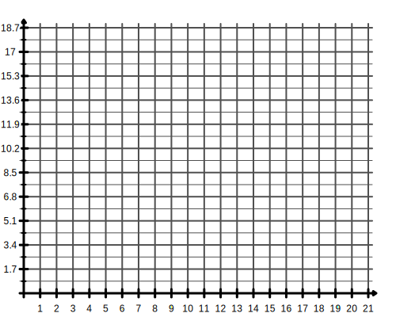
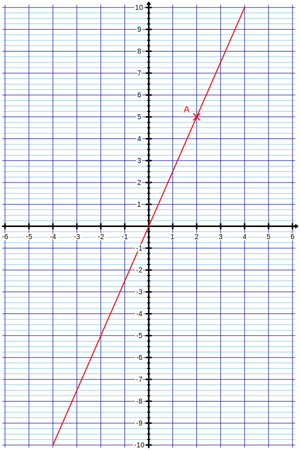
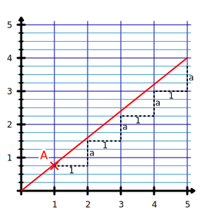

|
Chapitre 12
|
- Fonctions linéaires et affines
|
Activité Introduction
On considère le tableau de valeur suivant :
| Masse (kg) |
2 |
6 |
13 |
17 |
20 |
| Prix (€) |
1,70 |
5,10 |
11,05 |
14,45 |
17,00 |
- Ce tableau est-il proportionnel ?
- Calculer le coefficient de proportionnalité.
-
On considére la fonction $f(x)=0,85x$ calculer :
- $f(6)=...$
- $f(13)=...$
- $f(17)=...$
- $f(...)=1,70$
-
Représenter cette fonction dans le graphique suivant :

- Que remarque-t-on ?
Définition :
Expression littérale :
Soit $a$ un nombre quelconque. Une
fonction linéaire est une fonction qui, à
un nombre $x$ fait correspondre le nombre $\textcolor{#039be5}{a}\times x$.
On la note $f(x)=\textcolor{#039be5}{a}\times x$
Exemple :
La fonction qui à $x$, associe sont double est une fonction linéaire :
$f(x)=2x$ ou $f:x\mapsto 2x$
Tableau de valeur :
Propriété :
Un tableau de valeur d'une fonction linéaire est un
tableau de proportionnalité de coefficient de proportionnalité
$a$.
Exemple :
La fonction $f:x\mapsto 2,5x$ est une fonction linéaire. Le tableau de valeurs associé est le suivant :
| $x$ |
-4 |
-2 |
0 |
2 |
4 |
6 |
| $f(x)$ |
-10 |
-5 |
0 |
5 |
10 |
15 |
Remarque :
Dans un tableau de proportionnalité 0 correspond toujours à 0. Une fonction linéaire
vaut donc toujours 0 pour $x=0$.
Représentation graphique :
Propriété :
Dans un repère, la représentation graphique d'une fonction linéaire
$f(x)=\textcolor{#039be5}{a}x$ est une droite qui passe par l'origine du repère.
Exemple :

La fonction $f:x \mapsto 2,5x$ est une fonction linéaire.
$f(2) = 5$ on peut donc placer une point $A(2;5)$ qui se trouvera sur la courbe.
La représentation graphique de $f$ est donc une droite qui passe par l'origine du repère
et le point A.
Remarque :
-
Il suffit d'un unique point autre que l'origine du repère pour tracer
la représentation graphique d'une fonction linéaire
-
$a$ est appelé coefficient directeur
de la droite. Cela signifie que lorsque l'on se déplace d'une unité sur l'axe des
abscisses, on se déplace de $a$ unité sur l'axe des
ordonnées. On peut voir cela sur la figure ci-contre, le point A a pour coordonnées
$A(1,\textcolor{#039be5}{a})$.
